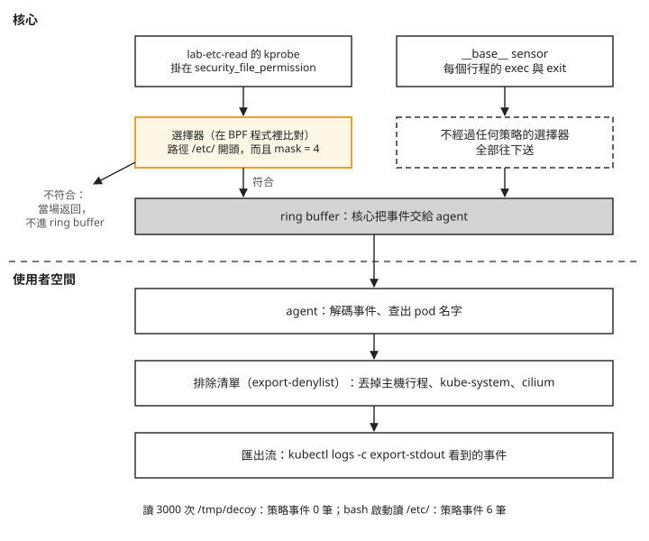
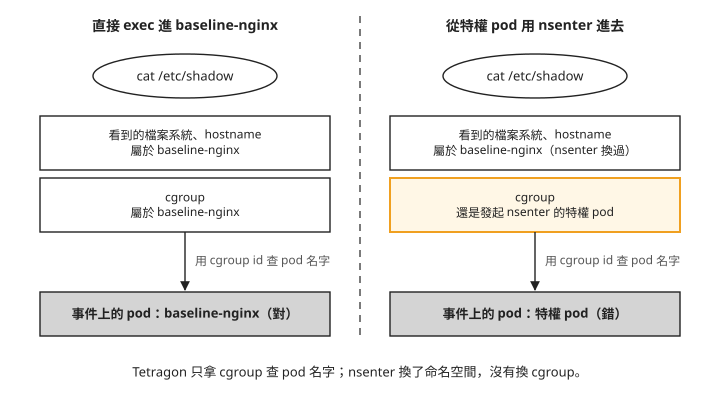

Day 5: Tetragon 與 TracingPolicy——事件在哪裡被過濾、pod 名字從哪裡來¶

Falco 跑了兩天，你已經知道它的限制：沒有規則比對的動作，不會產生告警（Day 3 的「從容器連到沒連過的位址，Falco 沒報」）。如果調查時還需要知道執行過哪些程式、參數是什麼、父行程是誰，就需要行程事件紀錄。Tetragon 是 Cilium 專案底下的 eBPF 安全觀測工具，在每個節點執行一顆 agent，預設記錄行程開始執行程式與結束的事件。Falco 用規則產生告警，Tetragon 的事件則提供後續調查所需的細節。
要追蹤讀取檔案等更細的動作，可以加入 TracingPolicy（追蹤策略）：指定觀察哪些核心函式，以及符合哪些條件才產生事件；這些條件在核心裡比對。匯出則是 agent 把事件依設定過濾後，寫成 JSON，供記錄系統收集。策略過濾與匯出過濾發生在不同位置，因此沒收到匯出事件，不代表核心裡沒有發生動作。
這一章把 Tetragon 裝在同一座叢集上，Falco 維持 Day 4 結束時的樣子，兩邊同時觀察同一批動作。讀完之後，你能分辨策略過濾與匯出過濾對事件量的影響，也能判斷事件裡的 pod 名字在什麼情況下不能直接當成操作目標。
開始之前¶
這一章沿用前幾天的叢集與工作負載：
- Falco 維持 Day 4 結束時的狀態：25 條預設規則加 2 條自訂規則。它是這一章的對照組，全程不改。
ebpf-lab特權 DaemonSet：Day 2 用過的那組特權 pod（hostPID、掛節點的/sys），Day 2 結束時已經跟著 namespace 一起刪掉，這裡重新建立。它只排到帶pool=ebpf標籤的節點上。步驟 5 要從它身上用nsenter進baseline-nginx。ebpf-labnamespace 裡的baseline-nginx：被觀察的對象，照 Day 3 步驟 4 建立。因為 namespace 已經由下面的檔案建好，Day 3 那行kubectl create namespace ebpf-lab可以略過。它必須跟特權 pod 排在同一個ebpf節點池上；如果你的baseline-nginx沒有指定節點，在 pod spec 補上跟下面 DaemonSet 一樣的nodeSelector與 spot 的 toleration。
cat > ebpf-lab-daemonset.yaml <<'EOF'
apiVersion: v1
kind: Namespace
metadata:
name: ebpf-lab
---
apiVersion: apps/v1
kind: DaemonSet
metadata:
name: ebpf-lab
namespace: ebpf-lab
labels:
app: ebpf-lab
spec:
selector:
matchLabels:
app: ebpf-lab
template:
metadata:
labels:
app: ebpf-lab
spec:
hostPID: true
nodeSelector:
pool: ebpf
tolerations:
- key: kubernetes.azure.com/scalesetpriority
operator: Equal
value: spot
effect: NoSchedule
containers:
- name: probe
image: mcr.microsoft.com/mirror/docker/library/ubuntu:24.04
command: ["sleep", "infinity"]
securityContext:
privileged: true
resources:
requests:
cpu: 50m
memory: 128Mi
volumeMounts:
- name: sys
mountPath: /sys
- name: debugfs
mountPath: /sys/kernel/debug
volumes:
- name: sys
hostPath:
path: /sys
type: Directory
- name: debugfs
hostPath:
path: /sys/kernel/debug
type: Directory
EOF
kubectl apply -f ebpf-lab-daemonset.yaml
步驟 1: 安裝 Tetragon¶
Tetragon 不需要 Cilium 當網路外掛（CNI）。本章在使用 Azure CNI overlay 的 AKS 叢集安裝，沒有回報錯誤，也沒有另外調整 CNI 設定。
先查有哪些版本：
$ helm repo add cilium https://helm.cilium.io/ && helm repo update cilium
$ helm search repo cilium/tetragon --versions | head -3
cilium/tetragon 1.7.0 1.7.0 Helm chart for Tetragon
cilium/tetragon 1.6.1 1.6.1
cilium/tetragon 1.6.0 1.6.0
第二欄是 chart 版本，第三欄是 Tetragon 本身的版本，兩者同號。Falco 不是這樣（chart falco-9.1.0 裝的是 Falco 0.44.1），看升級範圍時不要把兩種習慣搞混。
安裝時不帶任何調整事件的設定。這一章要量的是「照 chart 預設裝好之後，它會送出什麼」，先動了設定就量不到：
$ helm install tetragon cilium/tetragon --version 1.7.0 -n tetragon --create-namespace --wait
STATUS: deployed
它建了什麼¶
$ helm template cilium/tetragon --version 1.7.0 | grep '^kind:' | sort | uniq -c
2 ClusterRole 2 ClusterRoleBinding 2 ConfigMap
1 DaemonSet 1 Deployment 1 Role
1 RoleBinding 2 Service 2 ServiceAccount
工作負載有兩個。tetragon 是 DaemonSet，每個節點一顆，裡面有兩個容器：tetragon 是 agent 本體，以特權模式把 BPF 程式載進核心；export-stdout 負責把事件印出來，步驟 2 會看到它的作用。tetragon-operator 是單副本的 Deployment，只負責建立 Tetragon 的 CRD，建完之後幾乎閒置（實測 1m CPU、19Mi 記憶體）。
指令裡的 <tetragon-pod> 換成 kubectl -n tetragon get pods 列出的任一顆 tetragon- 開頭的 pod（不是 tetragon-operator）；要看特定節點時，加 -o wide 對 NODE 欄。
CRD 由 operator 在執行期建立，chart 的目錄與建立時序見CRD 的建立方式。
啟動日誌¶
msg="BTF discovery: default kernel btf file found" btf-file=/sys/kernel/btf/vmlinux
msg="BPF detected features: override_return: true, buildid: true, kprobe_multi: false,
uprobe_multi: true, fmodret: true, fmodret_syscall: true, signal: true, large: true,
link_pin: true, lsm: true, …"
msg="Loading sensor" name=__base__
msg="Available sensors" sensors=__base__
從上往下看，有三件事：
- BTF 用的是節點自帶的
/sys/kernel/btf/vmlinux，就是 Day 0 檢查過的那個檔案。Tetragon 靠它讀懂這顆核心的資料結構，不必為每個核心版本另外編譯。 lsm: true、override_return: true、signal: true、fmodret: true：Day 0 從開機參數推論 BPF LSM 是開的，這裡 Tetragon 自己偵測，得到同樣的答案。這四項是 Day 6 攔截要用的核心能力，這一章一項都不用。kprobe_multi: false：這顆核心不支援「一支程式一次掛很多個函式」，所以每個函式要各掛一支 kprobe。這一章只掛一個函式，沒有影響；策略寫到幾十個掛載點時，載入時間和核心記憶體會比較多。
最後兩行出現 sensor 這個詞。sensor 是 Tetragon 對「一組載入核心的 BPF 程式」的叫法。__base__ 是內建的那一組，記錄每一個行程的 exec（開始執行一支程式）與 exit（結束）。還沒寫任何策略時，載入的只有它，這就是接下來要量的預設狀態。
步驟 2: 預設狀態下，它送出多少事件¶
要量事件，得先知道去哪裡看。Tetragon 的事件有兩個出口：
- 匯出流：agent 先照設定過濾一輪，再把事件寫成節點上的一個 JSON 檔。
export-stdout容器用tail -q -F把這個檔案印到 stdout，所以kubectl logs -c export-stdout看到的就是這一份。接到記錄系統的通常也是它。 tetraCLI：Tetragon 的命令列工具，直接連到 agent 的 unix socket（同一台機器上行程之間溝通用的檔案），拿到的是還沒經過匯出過濾的事件。
tetra 不必另外下載，agent 映像裡就有，版本自動跟 agent 一致：
把兩個出口畫出來，由上往下是事件的流向。最上面的 ring buffer 是 Day 3 看過的那塊核心與使用者空間程式共用的記憶體，BPF 程式把事件放進去，agent 從另一頭讀出來：
BPF programs (ring buffer)
│
▼
tetragon agent ──── gRPC unix socket ────► tetra getevents ← 沒有過濾
│
├── export-allowlist / export-denylist / field-filters
▼
節點上的 JSON 檔
│
▼
export-stdout (tail -q -F) ──► kubectl logs ← 過濾之後
兩條路從 agent 分開。往右的 tetra getevents 不經過任何過濾；往下的那條，先經過三個匯出設定，才寫進檔案：export-allowlist 只放行列出的事件，export-denylist 丟掉符合條件的事件，field-filters 從事件裡拿掉指定的欄位。這一章會看到的是 export-denylist 的影響。
看匯出流時，kubectl logs <tetragon-pod> 不加 -c，拿到的是 agent 自己的文字日誌。要看事件必須加 -c export-stdout。另外，直接指定 pod 時，kubectl logs 預設讀取全部可用日誌；用 -l 選取 pod 時，預設每顆只讀最後 10 行。參數行為見 kubectl logs 官方文件。
將下面的驗證版腳本存成 tetra-events.sh，並設為可執行。它需要本機有 kubectl 與 Python 3，會先列出 pod，再逐顆讀取事件；預設不帶 --since。計算前後增量時，不要使用 --since 的移動時間窗，否則較早的事件會隨時間移出範圍。兩次計數之間也必須維持同一批 pod，且日誌沒有輪替，才能用前後差值表示新增事件。
#!/bin/bash
# tetra-events.sh - pull Tetragon's JSON event stream out of the DaemonSet.
#
# tetra-events.sh # every raw JSON event from every node
# tetra-events.sh --since 2m # only the last 2 minutes
# tetra-events.sh --types # histogram of event types
# tetra-events.sh --compact # one line per event, the fields that matter
# tetra-events.sh --size # bytes per event, and how much of it is node_labels
#
# The events come from the `export-stdout` sidecar, not from `tetragon`: the
# agent writes /var/run/cilium/tetragon/tetragon.log and hubble-export-stdout
# tails it. `-c export-stdout` is therefore mandatory -- `kubectl logs` without
# it picks the first container, which is the agent's own text log and holds no
# events at all.
set -u
K="${KUBECTL:-kubectl}"
NS="${TETRAGON_NS:-tetragon}"
MODE=raw
SINCE=()
while [ $# -gt 0 ]; do
case "$1" in
--types) MODE=types; shift ;;
--compact) MODE=compact; shift ;;
--size) MODE=size; shift ;;
--since) SINCE=(--since "$2"); shift 2 ;;
*) echo "unknown arg: $1" >&2; exit 2 ;;
esac
done
stream() {
for p in $($K -n "$NS" get pods -l app.kubernetes.io/name=tetragon -o name | sed 's#pod/##'); do
$K -n "$NS" logs "$p" -c export-stdout "${SINCE[@]+"${SINCE[@]}"}" 2>/dev/null
done
}
read -r -d '' PY_TYPES <<'PY' || true
import sys, json, collections
c = collections.Counter()
for l in sys.stdin:
try: e = json.loads(l)
except Exception: continue
for k in e:
if k not in ("time", "node_name", "node_labels"): c[k] += 1
for k, v in c.most_common(): print("%8d %s" % (v, k))
PY
read -r -d '' PY_COMPACT <<'PY' || true
import sys, json
KINDS = ("process_exec", "process_exit", "process_kprobe",
"process_tracepoint", "process_lsm", "process_uprobe")
for l in sys.stdin:
try: e = json.loads(l)
except Exception: continue
for kind in KINDS:
if kind not in e: continue
b = e[kind]; p = b.get("process", {}); pod = p.get("pod") or {}
who = "%s/%s/%s" % (pod.get("namespace", "-"), pod.get("name", "-"),
(pod.get("container") or {}).get("name", "-"))
extra = ""
if kind in ("process_kprobe", "process_lsm", "process_tracepoint"):
val = ""
for a in (b.get("args") or []):
if "file_arg" in a: val = (a["file_arg"] or {}).get("path", ""); break
if "string_arg" in a: val = a["string_arg"]; break
extra = " fn=%s arg=%s policy=%s" % (
b.get("function_name", b.get("subsys", "-")), val,
b.get("policy_name", "-"))
par = (b.get("parent") or {}).get("binary", "-")
print("%s %-18s %-46s %s %r parent=%s%s" % (
e.get("time", ""), kind, who, p.get("binary", "-"),
(p.get("arguments") or "")[:70], par, extra))
PY
read -r -d '' PY_SIZE <<'PY' || true
import sys, json
tot = n = lab = 0
for l in sys.stdin:
l = l.strip()
if not l: continue
try: e = json.loads(l)
except Exception: continue
n += 1; tot += len(l)
lab += len(json.dumps(e.get("node_labels", {}), separators=(",", ":")))
if n:
print("events=%d total=%d B avg=%.0f B/event node_labels=%.0f B/event (%.0f%%)"
% (n, tot, tot / n, lab / n, 100.0 * lab / tot))
PY
case "$MODE" in
raw) stream ;;
types) stream | python3 -c "$PY_TYPES" ;;
compact) stream | python3 -c "$PY_COMPACT" ;;
size) stream | python3 -c "$PY_SIZE" ;;
esac
原章節腳本（保留對照，請勿執行）
這份版本使用 logs -l 與預設 --since=10m，會漏計事件。請使用上方從驗證素材補回的完整版本。
cat > tetra-events.sh <<'EOF'
#!/usr/bin/env bash
# Pull Tetragon events out of the export-stdout sidecar (NOT the agent container).
# --types histogram by event type
# --compact one line per event: time, pod, binary, args
# --since passed to kubectl logs (default 10m)
set -euo pipefail
SINCE=10m; MODE=raw
while [ $# -gt 0 ]; do
case "$1" in
--types) MODE=types ;;
--compact) MODE=compact ;;
--since) SINCE="$2"; shift ;;
esac
shift
done
EV=$(kubectl -n tetragon logs -l app.kubernetes.io/name=tetragon -c export-stdout \
--since="$SINCE" --prefix=false 2>/dev/null | grep '^{' || true)
case "$MODE" in
types) echo "$EV" | jq -r 'keys[] | select(startswith("process_"))' | sort | uniq -c ;;
compact) echo "$EV" | jq -r '(.process_exec//.process_exit//.process_kprobe) as $p
| "\(.time) \($p.process.pod.namespace // "-")/\($p.process.pod.name // "-") \($p.process.binary) \($p.process.arguments // "")"' ;;
*) echo "$EV" ;;
esac
EOF
chmod +x tetra-events.sh
先看匯出流¶
裝好之後閒置兩分多鐘，不做任何動作，數這段時間匯出流裡新增的事件，同時數 Falco 的告警。Tetragon 這邊使用上方驗證版腳本、不帶 --since，讀取同一批 pod 的完整可用日誌，閒置前後各數一次相減；Falco 用 Day 3 的 falco-alerts.sh 數，例如 ./falco-alerts.sh | wc -l。後面幾步的事件數都用這兩支腳本這樣數，只看策略事件時，看 ./tetra-events.sh --types 裡 process_kprobe 那一列：
兩邊都是零。如果只量到這裡，結論會是「Tetragon 預設跟 Falco 一樣安靜」。先別下結論，看完另一個出口再說。
「新增 0 筆」不代表匯出流是空的。閒置前後各有 23 筆，所以新增 0 筆。這 23 筆是安裝當下寫進去的。這 23 筆裡，有幾筆的時間比 Tetragon 自己啟動還早：
03:12:36 process_exec kai-scheduler/binder-…/binder /workspace/app
03:16:26 process_exec falco/falco-…/falco /usr/bin/falco
03:17:26 process_exec tetragon/tetragon-…/… /bin/sh …
名單裡的行程會隨你的叢集而不同。啟動日誌裡有原因：
Tetragon 啟動時會掃一遍 /proc，把節點上已經在跑的行程記進自己的行程表，而且把它們當成事件送出來。Falco 啟動時也會重建行程表，但不會把它當告警。事故調查時這份清單有用，Tetragon 一起來你就知道節點上有哪些行程在跑；接在告警系統後面時，它是雜訊，DaemonSet 每重新部署一次，每個節點就多出上百筆。
再看 agent 裡面¶
接著用 tetra getevents 直接連 agent 收 60 秒。<tetragon-pod> 任挑一顆，量到的是那顆 pod 所在節點上的事件：
| 量到的東西 | 數字 |
|---|---|
| 事件數 | 1915 筆 / 60 秒 = 1915 筆/分鐘/節點 |
| 平均大小 | 3556 B/筆 |
| 換算 | 6.8 MB/分鐘/節點 ≈ 9.8 GB/天/節點 |
process_exit |
1175 |
process_exec |
740 |
| 命名空間為空字串（主機行程） | 1898（99.1%） |
| 任何應用命名空間 | 0 |
同一個節點、什麼都沒做，匯出流是 0 筆，agent 裡面是每分鐘 1915 筆。每天 9.8 GB 是拿這 60 秒換算的，本課沒有連續量一整天。
這些事件全部是 __base__ 記下的 exec 與 exit。看是哪些程式：
376 /usr/bin/jq
210 /etc/node-problem-detector.d/plugin/check_spot_eviction.sh
204 /etc/node-problem-detector.d/plugin/check_scheduledevent.sh
202 /usr/bin/curl
180 /etc/node-problem-detector.d/plugin/check_scheduledevent_consolidated.sh
86 /usr/bin/cat 62 /usr/bin/dirname 60 /usr/bin/uuidgen
排在前面的都是節點自己的程式。node-problem-detector（AKS 在節點上跑的健康檢查程式）每隔幾秒跑一輪 shell script，每個 script 再呼叫 curl、jq、mktemp、uuidgen。這是受管節點的正常狀態，跟工作負載無關。表格裡「命名空間為空字串」的 1898 筆，就是這些不屬於任何 pod、直接跑在主機上的行程。
兩個數字差在哪裡¶
差別出在匯出前的那一關。Tetragon chart 的預設值裡有一份排除清單（export-denylist），符合清單的事件不會寫進匯出流：
第一行 {"health_check":true} 丟掉 Kubernetes 健康檢查（exec 類型的 probe）產生的行程事件。第二行排除了三個命名空間。cilium 和 kube-system 好懂，第一個空字串 "" 才是重點：空字串命名空間代表「這個行程不屬於任何 pod」，也就是主機上的每一個行程。上面那 1898 筆全部被這一項丟掉。
排除主機行程有它的道理，沒有人想每天收 9.8 GB 的健康檢查紀錄。但這份預設有三件事要知道：
- 這是 chart 的預設，不是 Tetragon 程式本身的預設。 讀 Tetragon 的觀念文件不會知道，
kubectl get ds看不到，agent 啟動日誌裡雖然有，但跟另外四十幾個設定擠在同一行。 - 它在最後一關才丟。 BPF 程式跑過了、事件進過 ring buffer、agent 也解碼並查過 pod 名字，才在匯出前丟掉。被丟掉的事件，該花的成本都花了。
- 它讓整台主機從匯出流裡消失。 有人在節點上直接執行程式、沒有經過任何容器，這個行程的命名空間就是空字串，預設設定下它一筆都不會出現在匯出流裡。
還有一個細節：chart 預設把 Tetragon 裝在 kube-system，所以它自己的行程也被排除。這一章裝在 tetragon 命名空間，不在清單上，所以匯出流裡會看到 Tetragon 自己的事件，前面那 23 筆裡就有幾筆是它自己。
每筆事件的大小也值得注意：平均 3556 B，比一般想像的大，原因見疑難排解：事件比預期大，一半是節點標籤。
步驟 3: 一次 kubectl exec 在事件流裡長什麼樣¶
現在對 baseline-nginx 做一個最普通的動作：
這顆 pod 在 ebpf-lab 命名空間，不在排除清單上，所以事件會出現在匯出流。下面這幾筆取自步驟 5 的動作 D，跑的是同一個指令，所以時間比步驟 4 晚；這裡只列 exec 與 exit，每筆一行：
03:31:22.949 process_exec ebpf-lab/baseline-nginx/nginx /proc/self/fd/6 'init' parent=/usr/bin/runc
03:31:22.951 process_exit ebpf-lab/baseline-nginx/nginx /proc/self/fd/6 'init' parent=/usr/bin/runc
03:31:22.962 process_exec ebpf-lab/baseline-nginx/nginx /usr/bin/cat '/etc/shadow' parent=/usr/bin/containerd-shim-runc-v2
03:31:22.964 process_exit ebpf-lab/baseline-nginx/nginx /usr/bin/cat '/etc/shadow' parent=/usr/bin/containerd-shim-runc-v2
一個指令產生兩組 exec／exit。前兩筆是 runc 進入容器時跑的輔助程式，後兩筆才是 cat。注意 cat 的 parent=containerd-shim-runc-v2：Falco 的 container_entrypoint macro 判斷的也是這件事（Day 3 的「容器裡的程式再開 shell，Terminal shell in container 不報」）。Falco 把它寫進規則條件，自己做判斷；Tetragon 只把父行程印出來，判斷留給你。
pod 名字從哪裡來¶
每筆事件都帶著一段 pod 資訊：
"pod": {
"namespace": "ebpf-lab", "name": "baseline-nginx",
"container": { "id": "containerd://ce8a862c00d9…", "name": "nginx",
"image": { "name": "mcr.microsoft.com/mirror/docker/library/nginx:1.25" },
"pid": 23 },
"pod_labels": {"app": "baseline-nginx"},
"workload": "baseline-nginx", "workload_kind": "Pod"
}
比 Falco 多了幾樣：容器內看到的 pid（23，不是主機上的 pid）、pod labels、workload 與 workload kind。Falco 的 container.* 欄位給不到後兩者。
但核心並不知道 pod 是什麼，這段資訊是後來補上去的。兩個工具補的方法不一樣：
| Falco | Tetragon | |
|---|---|---|
| 核心事件帶了什麼 | pid、cgroup id | pid、cgroup id（BPF 在 execve 當下記下來） |
| 誰把它變成 pod 名字 | container plugin 從 cgroup 路徑取出 container id，再問容器執行期 | agent 從 Kubernetes API 持續取得 pod 清單，維護一張「cgroup id 對 pod」的表，事件出核心後查表 |
| 查表在哪一層 | 使用者空間 | 使用者空間 |
| pod 名字的依據 | cgroup | cgroup |
做法差很多，最後一列卻一樣：兩邊都靠行程所屬的 cgroup 決定它是哪顆 pod。Day 2 的「從節點 nsenter 進去的動作沒有被記錄」已經說過，有一種動作會讓這個依據失準。步驟 5 會實際測。
步驟 4: 第一條 TracingPolicy¶
到這裡看到的都是 __base__ 記錄的 exec 與 exit。想看更細的事，例如「誰讀了 /etc/ 底下的檔案」，就要寫 TracingPolicy。它是 Tetragon 的 Kubernetes 自訂資源，內容說明三件事：要掛在哪個核心函式上、要讀這個函式的哪幾個參數、符合什麼條件才送出事件。
這一章的目標是：ebpf-lab 裡任何 pod 讀 /etc/ 底下的檔案，都要留下一筆事件，其他的不要。
cat > tracingpolicy-file-open.yaml <<'EOF'
apiVersion: cilium.io/v1alpha1
kind: TracingPolicyNamespaced # scoped to one namespace, not the cluster
metadata:
name: lab-etc-read
namespace: ebpf-lab
spec:
kprobes:
- call: "security_file_permission"
syscall: false # kernel-function ABI, not the syscall ABI
return: true
args:
- index: 0
type: "file" # struct file * — CO-RE resolves f_path to a string
- index: 1
type: "int" # mask: MAY_EXEC=1, MAY_WRITE=2, MAY_READ=4
returnArg:
index: 0
type: "int"
selectors:
- matchArgs: # both entries in one selector are AND-ed
- index: 0
operator: "Prefix"
values: ["/etc/"]
- index: 1
operator: "Equal"
values: ["4"]
EOF
kubectl apply -f tracingpolicy-file-open.yaml
由上往下看每一段為什麼這樣寫。
kind: TracingPolicyNamespaced：只對一個命名空間生效的 TracingPolicy。它的範圍限制發生在核心裡：Tetragon 在核心裡維護一張表，記著「這條策略適用哪些 cgroup id」，內容由 agent 依 Kubernetes 的 pod 清單填入。BPF 程式一被觸發，第一件事就是查這張表，不在名單上的 cgroup 直接返回，事件根本不會離開核心。Falco 寫 k8s.ns.name = "ebpf-lab" 也能限定命名空間，但那個條件是在事件已經複製到使用者空間、pod 資訊也查完之後才比對的。
call: "security_file_permission"：要掛的核心函式。用 read、write 這類系統呼叫存取已開啟的檔案時，核心都會經過 security_file_permission 做權限檢查，不管檔案是用 open、openat 還是 openat2 開的。用 mmap 把檔案映射進記憶體走的是另一個檢查點（security_mmap_file），不在這條策略的範圍內。代價是它被呼叫得非常頻繁，所以需要下面的選擇器。這個函式是 LSM 的檢查點，但這裡掛的是 kprobe，只觀察、不攔截；Day 6 的攔截走另一種掛法。
syscall: false：告訴 Tetragon 這是一般的核心函式，要照核心函式的方式讀參數，不是照 system call 的方式。寫錯不會載入失敗，而是讀到看起來很合理、其實是錯的值。
type: "file"：第一個參數是 struct file *。Tetragon 靠 Day 0 講過的 BTF 找到裡面的路徑欄位，換成字串給你。策略檔裡沒有任何內容跟這顆核心的版本有關。
selectors：選擇器，決定哪些呼叫要送出事件。比對寫在 BPF 程式裡，在核心裡當場完成。組合規則要記住：同一個選擇器裡的多個 matchArgs 是 AND，不同選擇器之間是 OR。所以上面這段讀作「路徑以 /etc/ 開頭，而且 mask 等於 4（讀取）」。
套用之後，用 agent 的 tetra tracingpolicy list 確認策略是否載入：
$ kubectl -n tetragon exec <tetragon-pod> -c tetragon -- tetra tracingpolicy list
ID NAME STATE FILTERID NAMESPACE SENSORS KERNELMEMORY MODE
3 lab-etc-read enabled 3 ebpf-lab generic_kprobe 462.15 kB monitor_only
STATE 是 enabled 才算載入成功。MODE 的 monitor_only 是 agent 依策略內容標的：這條策略裡沒有任何攔截動作，所以只觀察。FILTERID 是這條策略在前面那張「策略適用哪些 cgroup id」表裡的編號。KERNELMEMORY 的 462.15 kB 是這條策略在核心裡佔的記憶體，Falco 的規則全在使用者空間，沒有對應的數字。
tetra tracingpolicy list -o json 的 stats.action_counters.post 不等於事件數。單次讀取的紀錄中，它增加 5，匯出事件只增加 1；計算事件量應使用匯出事件，不能直接採用這個計數。
讀一次 /etc/shadow¶
匯出流裡多了一筆 process_kprobe 事件，也就是 TracingPolicy 的 kprobe 產生的事件：
{
"process_kprobe": {
"process": {
"pid": 25115, "uid": 0, "binary": "/usr/bin/cat", "arguments": "/etc/shadow",
"pod": { "namespace": "ebpf-lab", "name": "baseline-nginx",
"container": { "name": "nginx", "pid": 23 } }
},
"parent": { "pid": 21569, "binary": "/usr/bin/containerd-shim-runc-v2" },
"function_name": "security_file_permission",
"args": [ {"file_arg": {"path": "/etc/shadow", "permission": "-rw-r-----"}},
{"int_arg": 4} ],
"return": {"int_arg": 0},
"action": "KPROBE_ACTION_POST",
"policy_name": "lab-etc-read"
},
"node_name": "<node-a>",
"time": "2026-08-07T03:26:20.860883032Z"
}
逐項對回剛才的動作：policy_name 是剛寫的策略，function_name 是掛的那個函式，file_arg.path 是讀的檔案，int_arg: 4 是選擇器要求的 mask，binary 和 arguments 是下的指令，pod 是 exec 進去的那顆。從動作到事件產生相隔 1.0 毫秒。
return.int_arg: 0 是這次掛載函式回傳值的紀錄。Day 6 會在策略的 matchActions 加入攔截動作；輸出事件中的 return.int_arg 本身不是設定欄位。
讀 3000 次不符合的檔案¶
選擇器只放行 /etc/ 開頭的路徑。在同一顆 pod 裡，讀 3000 次 /tmp 底下的檔案。下方保留的「策略 kprobe 事件增量:0」只對應 /tmp/decoy 的讀取，不是整段指令的策略事件總數；bash 啟動時另有 6 筆，後面分開列出：
$ kubectl -n ebpf-lab exec baseline-nginx -- bash -c \
'echo hello > /tmp/decoy; for i in $(seq 1 3000); do cat /tmp/decoy > /dev/null; done'
策略 kprobe 事件增量:0
/tmp/decoy 的讀取沒有產生策略事件。security_file_permission 至少被呼叫了 3000 次，每一次 BPF 程式都比對了路徑前綴，不符合就返回，事件連 ring buffer 都沒進。Falco 要做同樣的篩選，得先把每個事件搬到使用者空間、補完行程與容器資訊，再拿每條規則的條件去比，所以 Falco 沒有告警時也照樣在花 CPU（Day 3 的「節點的 CPU 實際用量不高，Falco 卻排不進去」量過這件事）。
這段時間裡策略倒是產生了 6 筆事件，都來自 bash 自己：/etc/nsswitch.conf 四次、/etc/passwd 兩次，是 bash 啟動時查使用者資訊讀的。可見 /etc/ 這個前綴對任何會跑 shell 的容器都不算少見。真要放到正式環境，前綴要縮到 /etc/shadow 這種程度，或加上 matchBinaries（依執行檔路徑比對的選擇器條件）排除 shell 自己的查詢。
同一段時間（約 50 秒），依動作分開計數：
| 事件數 | |
|---|---|
讀取 /tmp/decoy 產生的 process_kprobe |
0 |
bash 啟動時讀取 /etc/ 產生的 process_kprobe |
6 |
| Falco 告警 | 0 |
除了上述策略事件，cat 的 exec 與 exit 也會由步驟 1 看到的 __base__ 記錄，不受這條策略的路徑條件限制。下面這張圖把兩種事件來源分開畫，看它們各自在哪一關被篩：

圖上有兩件事要注意。第一，選擇器只管它所屬的那條策略；__base__ 的事件走右邊那一欄，不受任何 TracingPolicy 影響。第二，__base__ 事件唯一的關卡是最下面的排除清單，而那是使用者空間的設定，事件到那裡時，核心和 agent 的工作都已經做完了。
所以：
- 「只裝了一條很窄的策略，所以很省」不成立。 事件量取決於工作負載多常啟動新程式。一個會不斷 fork 的 CI runner、一個大量呼叫 shell 的啟動腳本，就足以把量拉上去。
- 刪掉策略也不會變安靜。 回到零策略，就是回到步驟 2 那每分鐘 1915 筆。
- 要降低事件量，調的是 chart 的匯出設定（排除清單、欄位過濾、速率限制），不是 TracingPolicy。這些設定都在使用者空間，省的是下游的頻寬與儲存，不省核心和 CPU。
跟 Falco 比，成本落在不同的地方：Falco 對每個事件都要比對所有規則，CPU 是固定開銷，輸出卻接近零；Tetragon 在核心裡的成本很低，輸出量則跟著工作負載啟動程式的頻率走。
步驟 5: 四個動作，兩套工具同時看¶
接下來做 Day 3、Day 4 做過的四個動作，Falco（25 條預設加 2 條自訂）和 Tetragon（__base__ 加 lab-etc-read）同時在看。四個動作是：
- A：帶終端機 exec 進去，在 shell 裡用
&fork 出另一個 shell。script -q /dev/null替kubectl配一個終端機（Day 3 的「用kubectl exec -t開 shell，Falco 沒報」）。 - B：同樣的 fork，但不配終端機，模擬透過 web shell 下指令。
- C：從同一個節點上的
ebpf-lab特權 pod，用nsenter進入baseline-nginx的命名空間讀/etc/shadow。-t後面要填baseline-nginx的 nginx 主行程在主機上的 pid，可以在特權 pod 裡用ps找。 - D：直接 exec 進
baseline-nginx讀/etc/shadow。
$ script -q /dev/null kubectl -n ebpf-lab exec -it baseline-nginx -- \
bash -c 'bash -c "echo forked-shell-ran" & wait; echo done'
$ kubectl -n ebpf-lab exec baseline-nginx -- \
bash -c 'bash -c "echo webshell-no-tty" & wait; echo done'
$ kubectl -n ebpf-lab exec <ebpf-lab-pod> -- \
bash -c "ps -eo pid,comm --no-headers | awk '\$2==\"nginx\"{print \$1; exit}'"
$ kubectl -n ebpf-lab exec <ebpf-lab-pod> -- \
nsenter -t <nginx-host-pid> -m -u -i -n -p /bin/bash -c \
'hostname; cat /etc/shadow > /dev/null; echo nsenter-ok'
$ kubectl -n ebpf-lab exec baseline-nginx -- cat /etc/shadow > /dev/null
<ebpf-lab-pod> 是跟 baseline-nginx 在同一個節點上的那顆特權 pod：用 kubectl -n ebpf-lab get pods -o wide 對 NODE 欄找。<nginx-host-pid> 是第三行指令印出的數字。兩套工具的結果：
| 偏離 | Falco 的告警 | 回報的行程所屬 Pod | Tetragon 的事件 | 回報的行程所屬 Pod |
|---|---|---|---|---|
A bash -c "…" & wait（有 pty） |
2 筆：預設 Terminal shell in container 加自訂 Shell spawned by non-runtime parent |
baseline-nginx ✓ |
18 筆：3 exec、3 exit、12 kprobe。無規則名、無嚴重度 | baseline-nginx ✓ |
| B 同上但無終端機 | 1 筆：只有自訂規則。預設規則靜音 | baseline-nginx ✓ |
18 筆，與 A 完全相同的組成 | baseline-nginx ✓ |
C nsenter 進 baseline-nginx 讀 /etc/shadow |
2 筆 | 呼叫端 ✗ | 34 筆，含 nsenter 指令與完整參數 |
呼叫端 ✗ |
D 直接在 baseline-nginx 裡讀 /etc/shadow |
1 筆 | baseline-nginx ✓ |
8 筆：2 exec、2 exit、4 kprobe（策略產生的） | baseline-nginx ✓ |
表中的「呼叫端」是發起 nsenter 的那顆 ebpf-lab 特權 pod。先看 C，再看 A 和 B。
C：nsenter 讀的檔，記到了哪顆 pod¶
Day 3 看過 Falco 在這一格認錯 pod（Day 3 的「nsenter 進容器的告警，pod 欄位是發起端」）。Tetragon 的做法不同：cgroup id 是 BPF 程式在 execve 當下就在核心裡記下的，不是事後去問容器執行期。聽起來應該比較準。實際的事件：
03:31:22.303 process_exec <呼叫端 pod> /usr/bin/nsenter
'-t 21743 -m -u -i -n -p /bin/bash -c "hostname; cat /etc/shadow …"'
03:31:22.341 process_kprobe <呼叫端 pod> /usr/bin/cat '/etc/shadow'
fn=security_file_permission policy=lab-etc-read
讀 /etc/shadow 的那筆，pod 欄位是發起的特權 pod。可是事情到底發生在哪裡，指令自己的輸出已經回答了：
$ … nsenter -t 21743 -m -u -i -n -p /bin/bash -c 'hostname; cat /etc/shadow …'
baseline-nginx ← hostname 回報的是被進入的那顆
再對照 D，直接 exec 進去做同一件事：
兩筆事件是同一個檔案、同一支程式，前後不到一秒，卻掛著兩個不同的 pod 名字，C 那筆是錯的。把兩條路徑並排畫出來：

照著圖上兩欄比：nsenter 換掉的是上面那一格，也就是行程看到的檔案系統、hostname 這些命名空間；下面那一格的 cgroup 沒有變。Tetragon 查 pod 名字只看 cgroup，所以查到的是發起者。核心只知道 pid、命名空間和 cgroup，「這是哪顆 pod」一定是把 cgroup 對到 Kubernetes 物件推出來的。在核心裡把 cgroup id 記得再早、再準，記到的都是發起者的 cgroup。
到這裡，課程用過的三個工具都在這一格失準了：
| 結果 | |
|---|---|
| Day 2 bpftrace（綁 cgroup 過濾） | 完全看不到 |
| Day 3 Falco（全節點探針加執行期反查） | 看得到，pod 認錯 |
| Day 5 Tetragon（全節點探針加核心層 cgroup id） | 看得到，pod 認錯 |
訊號本身沒有消失，只是標錯 pod。而 Tetragon 多給了一樣 Falco 沒有的東西：nsenter 這個指令連同完整參數，本身就是一筆事件，不需要任何策略或規則。Day 3 的 Falco 預設規則沒有一條在看 nsenter；Tetragon 不需要有人事先想到要看它。調查時拿到錯的 pod 名字之後，往上看父行程是 /usr/bin/nsenter，再看它的參數 -t 21743，真正的目標就在裡面。
A 和 B：有沒有終端機，Tetragon 分不出來¶
A（有終端機）和 B（沒有終端機）在 Tetragon 的事件流裡組成完全一樣：各 3 筆 exec、3 筆 exit、12 筆 kprobe，程式、父行程、pod、參數全部相同，只有時間和 pid 不同。原因是事件的 process 結構裡根本沒有終端機這個欄位：
process struct keys: arguments, auid, binary, cwd, docker, exec_id, flags,
in_init_tree, parent_exec_id, pid, pod, refcnt,
start_time, tid, uid
Day 4 用 tty=0 分辨「不是真人打的 kubectl exec」，這個訊號在 Tetragon 的預設事件裡不存在。
反過來，B 也是 Falco 預設規則表現最差的一格：只報 1 筆，還是 Day 4 的自訂規則報的；預設的 Terminal shell in container 因為條件裡有 proc.tty != 0，完全沒有反應。Tetragon 的 18 筆沒有任何判斷，但 bash 的 exec 事件不會因為沒有終端機就不見。這一格要分辨有沒有終端機，得靠 Falco 的 tty 欄位；要確定 shell 有沒有被執行過，Tetragon 的紀錄比較完整。
總數¶
把四個動作的結果加總：
| Falco | Tetragon | |
|---|---|---|
| 事件或告警總數 | 6 | 78 |
| 每一筆都對得回一個動作嗎 | 是 | 是 |
| 帶規則名與嚴重度嗎 | 是（含 MITRE T1059 / T1555） | 否 |
| 需要人再判斷嗎 | 否 | 是 |
MITRE T1059、T1555 是 MITRE ATT&CK 攻擊手法分類的編號，分別是「用命令列或腳本直譯器執行指令」和「從密碼儲存處取得憑證」。
同樣四個動作，Tetragon 的事件數是 Falco 的 13 倍，而且每一筆都要人判斷。這還只是一條窄策略、四個動作、十秒鐘內的量；步驟 4 的 3000 次讀取也說明，即使檔案路徑不符合策略，行程的 exec 與 exit 仍會產生事件。Falco 的告警帶規則名、嚴重度、MITRE 分類，看了就知道發生什麼事，但沒寫規則的事看不見。Tetragon 的事件帶執行了什麼、參數、父行程、哪顆 pod，是否可疑要另外判斷。
步驟 6: 資源用量¶
閒置、載入一條策略時，兩套工具的用量如下。本章沒有附量用量的原始指令；要自己量，叢集需要有 metrics-server（AKS 預設會裝）提供 pod 的用量：
| 元件 | CPU | 記憶體 | QoS |
|---|---|---|---|
| Tetragon agent（每節點） | 5–11m | 83–120Mi | BestEffort |
Tetragon export-stdout（每節點） |
1m | <1Mi | — |
| Tetragon operator（單顆） | 1m | 19Mi | Burstable |
| Falco（每節點） | 13–27m | 84–90Mi | Burstable |
Tetragon 的 CPU 比 Falco 低。Falco 對每一個 execve 都要在使用者空間把 27 條規則跑一遍；Tetragon 沒有策略時，只是把事件搬出來。記憶體則是 Tetragon 稍高，它的行程表與核心裡的對照表都是預先配置的。另外再加上每條策略的核心記憶體，lab-etc-read 是 462.15 kB。
上表的閒置用量不含開過 tetra getevents 串流的 agent；該 agent 的記憶體量到 163Mi，串流結束後沒有立即下降。評估記憶體需求時，還要考慮收集串流期間的用量。QoS 設定見疑難排解：BestEffort agent 在記憶體不足時的處理。
最後是閒置時的匯出量。零策略時，132 秒內 Tetragon 匯出 0 筆、Falco 0 筆告警。載入一條策略後再閒置 195 秒，Tetragon 匯出 4 筆、Falco 仍是 0 筆。那 4 筆來自查策略狀態時 kubectl exec 進 tetragon 命名空間的動作，這個命名空間不在預設的排除清單上；扣掉之後，兩種狀態都是零。但步驟 2 已經知道，這個零是排除清單丟掉的結果，agent 裡面每分鐘仍有 1915 筆。
疑難排解¶
CRD 的建立方式¶
Tetragon 1.7.0 chart 把 CRD 放在 crds-yaml/，由 operator 建立。以下是 chart 目錄與模板輸出的紀錄：
$ helm pull cilium/tetragon --version 1.7.0 --untar && ls tetragon/
Chart.yaml crds-yaml/ LICENSE README.md templates/ values.yaml
↑ 不是 crds/
$ helm template cilium/tetragon --version 1.7.0 --include-crds | grep -c CustomResourceDefinition
0
安裝紀錄中的兩個 CRD 都在 Helm 回報完成之前建立：
11:17:19 helm install 開始
11:17:27 tracingpolicies.cilium.io 建立
11:17:29 tracingpoliciesnamespaced.cilium.io 建立
11:17:40 helm 回 STATUS: deployed
這份紀錄沒有出現套用策略時找不到資源類型的錯誤。策略套用後的載入狀態，仍應用步驟 4 的 tetra tracingpolicy list 確認。
匯出流閒置時幾乎沒有事件¶
chart 預設的排除清單把空字串命名空間（主機上的所有行程）、kube-system、cilium 都丟掉了，agent 裡其實每分鐘有上千筆。要看還沒過濾的事件，用 tetra getevents。說明與數字見步驟 2。
事件比預期大，一半是節點標籤¶
症狀：拿文件裡的範例事件大小估算儲存量，實際用量多出一倍。
步驟 2 補上的驗證版腳本已包含 --size，會統計事件總大小、平均大小與 node_labels 的大小。
原因：一筆平均 4421 B 的事件裡，2158 B 是 node_labels，也就是雲端供應商掛在節點上的四十幾個標籤，每筆事件都重複帶一次。照步驟 2 每分鐘 1915 筆的速率算，光節點標籤每天每節點就約 5.9 GB。標籤有多少由雲端供應商決定，不在你的設定檔裡；節點標籤少的叢集，同樣的事件會小很多，全部拿掉最多小將近一半。
修法：匯出設定裡的 field-filters 可以拿掉指定欄位，但它的預設是空的，要自己寫欄位路徑清單，也沒有任何預設值或範例把 node_labels 列進去。這份設定的寫法，跟下面 resources 的補法一樣，本課都沒有驗證。
確認策略已載入¶
每次套用策略後，都用 tetra tracingpolicy list 確認 STATE 是 enabled。本章策略的指令與成功輸出見步驟 4。Kubernetes 物件建立成功，只能確認 API server 接受了資源，仍需檢查 agent 是否載入策略。
既有輸出：舊版策略的 load_error（不適用本章策略）
以下保留舊版策略的指令與輸出供辨識錯誤；本章策略不含輸出中提到的 returnArgAction，不用依此修改 manifest。
$ kubectl apply -f tracingpolicy-file-open.yaml
tracingpolicynamespaced.cilium.io/lab-etc-read created ← 成功
$ kubectl -n ebpf-lab get tracingpoliciesnamespaced
lab-etc-read 8s ← 存在
$ kubectl -n ebpf-lab get tracingpolicynamespaced lab-etc-read -o json | jq .status
<absent> ← 沒有 status
$ kubectl -n ebpf-lab describe tracingpolicynamespaced lab-etc-read | tail -1
Events: <none> ← 沒有 event
只裝了一條很窄的策略，匯出量還是很大¶
匯出量的大宗來自永遠開著的 __base__，它記錄每個行程的 exec 與 exit，不受任何 TracingPolicy 影響。要降低匯出量，調的是 chart 的匯出設定，不是策略。說明與數字見步驟 4 的 3000 次讀取實驗。
nsenter 進去讀的檔，事件記在發起的 pod 上¶
Tetragon 用行程的 cgroup 決定 pod 名字，而 nsenter 只換命名空間、不換 cgroup，所以事件記在發起 nsenter 的 pod 上。往上看父行程和 nsenter 的 -t 參數，可以找回真正的目標。見步驟 5 的 C。
事件裡找不到 tty，分不出有沒有終端機¶
Tetragon 事件的 process 結構沒有終端機欄位，有終端機的 shell 和 web shell 在事件流裡長得一樣。需要這個訊號時要靠 Falco。見步驟 5 的 A 和 B。
BestEffort agent 在記憶體不足時的處理¶
症狀：照 chart 預設安裝，agent 的 QoS 是 BestEffort。
$ kubectl -n tetragon get pod <tetragon-pod> -o jsonpath='{.status.qosClass} prio={.spec.priority}'
BestEffort prio=0
$ kubectl -n falco get pod <falco-pod> -o jsonpath='{.status.qosClass} prio={.spec.priority}'
Burstable prio=0
原因：chart 給 agent 容器的是 resources: {}，也沒有設 priorityClassName。沒有 requests 的 pod 是 BestEffort，節點記憶體不足時最先被 OOM kill。Falco 的 chart 至少給了 requests（還給多了，見 Day 3 的「節點的 CPU 實際用量不高，Falco 卻排不進去」），所以是 Burstable。priority 兩邊都是 0，低於所有系統元件。
chart 還設了 tolerations: [{operator: Exists}]，表示它可以排到任何節點。好處是不用像 Day 3 那樣替 Falco 補 toleration；壞處是你不想放監控的節點也會被排上去。
把步驟 6 的表加起來，兩套工具每節點合計約 19–39m CPU、167–211Mi 記憶體，但向排程器宣告的 requests 只有 Falco 那一份，排程器在分配節點資源時算不到 Tetragon。
agent 結束時，chart 1.7.0 的預設（enableKeepSensorsOnExit: false）會讓它卸載 BPF 程式。在 DaemonSet 把 agent 重建起來之前，這個節點沒有 Tetragon 的監控。
修法：在 chart values 裡自己補上 agent 的 resources 與 priorityClassName，數字可以參考步驟 6 的實測用量。
想一想¶
- 同事照 chart 預設把 Tetragon 裝在
kube-system，匯出流接上了記錄系統，一週下來只有零星幾筆，他的結論是「節點很乾淨」。如果有人 SSH 登入某個節點、直接在主機上執行了一支可疑程式，這件事會出現在他收到的事件裡嗎？要讓這類事件以後收得到，你會改哪個設定，代價是什麼？ - 某個節點專門跑 CI runner，每分鐘啟動上千個短命的行程。叢集上只有一條 TracingPolicy，只看
/etc/shadow的讀取。有人說「策略這麼窄，Tetragon 在這個節點上的事件量一定很小」，你同意嗎？如果要降低送到記錄系統的量，你會去改哪裡，這樣改能省下節點上的 CPU 嗎？ - 一筆 Tetragon 事件顯示，特權 pod
debug-tools讀了/etc/shadow，但debug-tools的映像裡有沒有這個檔案你也不確定。你會在事件流裡找哪些線索，判斷真正被讀的是不是另一顆 pod 的檔案？
小結¶
這一章把 Tetragon 和 Falco 放在同一批動作前面比。Tetragon 的「安靜」有兩個來源，要分開看：策略的選擇器在核心裡比對，不符合的呼叫連 ring buffer 都不進，這是真的省；但 __base__ 記錄的 exec 與 exit 不歸任何策略管，它們的去留只取決於匯出前的排除清單，而 chart 預設把主機行程整個丟掉，匯出流的零往往只是被丟掉的結果。pod 名字方面，Tetragon 跟 Falco 一樣靠 cgroup 決定，nsenter 這類只換命名空間的動作會讓它記到發起者身上，「在核心裡記錄」改變不了這一點。以後看到匯出流安靜得不合理，先用 tetra getevents 看 agent 裡面；看到一筆事件指向某個特權 pod，先查父行程有沒有 nsenter。本章只用了一個 kprobe 掛載點，tracepoint、uprobe、LSM 掛載點的過濾行為沒有驗證。
延伸閱讀¶
想再深入，可以從這幾份開始：
- TracingPolicy 的概念與組成 —— 官方對「掛勾點加上核心內過濾的選擇器」這個結構的說明，對得上步驟 4 的逐段說明。
- 選擇器的完整語法 ——
matchArgs、matchBinaries、matchPIDs等各種過濾器與運算子；官方明載同一個選擇器內的條件是 AND、多個選擇器之間是 OR。 - Helm chart 參數表 —— 排除清單與 resources 兩項疑難排解的一手來源：
exportDenyList的預設值（含那個空字串命名空間）與resources的空物件預設，都逐字列在這份表裡。 - Falco 規則的三個基本元件 —— 對照組。把它跟 TracingPolicy 的結構並排讀，可以看出一個是比對條件、送出判斷，一個是指定掛載點、送出紀錄。
下一步¶
這一章的策略只觀察，MODE 全程是 monitor_only；agent 回報的 lsm、override_return、signal、fmodret 四項核心能力都具備，但一項都沒用。Tetragon 和 ebpf-lab namespace 都留給 Day 6 用，只把這一章的策略刪掉：
Day 6 在策略加入 Sigkill 動作，對符合條件的行程送出 SIGKILL，並比較 Override 改寫回傳值的方式，然後回答兩個問題：SIGKILL 是擋住了操作，還是只在事後把行程殺掉？寫錯一條攔截規則，從應用程式那一側看起來是什麼樣子？這一章量到的 nsenter 歸屬錯誤，到了攔截的情境也會帶來不同的後果。
Tetragon 標誌為 Tetragon 專案之官方資產，此處作社群教學用途。